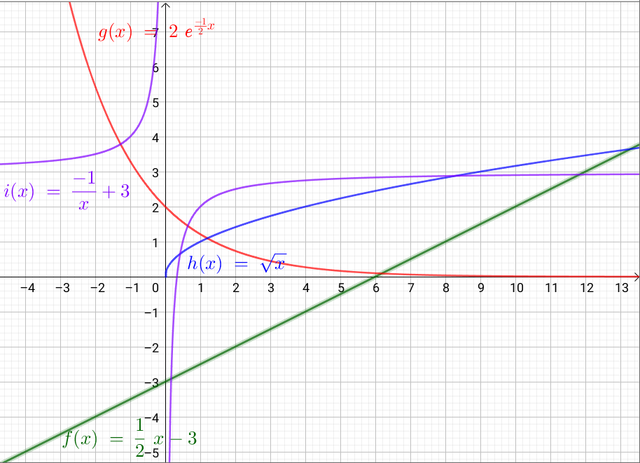

Funktioner
Matematik B & A
Jacob Debel
Funktioner generelt
Sammenhæng mellem variable
I kender det allerede:
- Regningen på energidrik afhænger af antallet af energidrik, der købes (og mærket selvfølgelig).
- Renteindtægterne i banken afhænger af pengene på bankbogen.
- Tidevand afhænger af tidspunktet på døgnet.
Fælles er:
- at en størrelse afhænger af en anden.
- men at den anden størrelse ikke afhænger af den første.
Eksempel
- Der er ikke både flod og ebbe (høj- og lavvande) på samme tid.
- Vi betaler ikke to forskellige beløb for det samme antal mælk (af samme mærke og i samme butik).
To variabeltyper
- Den uafhængige variabel
- Den I før har kaldt x.
- Værdierne kan vælges "frit".
- Den afhængige variabel
- Den I før har kaldt y og nu kommer til at kalde \(f(x)\).
- Værdien afhænger af, hvad den uafhængige værdi.
Parsammenligning
Find selv på eksempler, hvor en størrelse afhænger af en anden.
- Først i makkerpar.
- Del jeres eksempler i makkerskabsgruppen.
Funktionsbegrebet
I matematik er en funktion en matematisk sammenhæng mellem to størrelser.
Definition 1
En funktion er en sammenhæng mellem to størrelser \(x\) og \(y\), som opfylder følgende betingelse:
"Til enhver værdi af \(x\) svarer præcis en værdi af \(y\)."
Man siger i dette tilfælde, at \(y\) er en funktion af \(x\). Kaldes funktionen for \(f\), skriver man \(y=f(x)\).
En lille (sproglig) opgave
Repræsentationsformer
Typisk beskrives en matematisk funktion ved en forskrift og/eller en graf.
Forskrifter:
Hvad skal det sige inde i hovedet?
De tilhørende grafer:

Funktioner og grafer
Diskutér i makkerpar.
Lidt regning

Dm og Vm
Nej, der er hverken tale om Danmarks- eller verdensmesterskabet her.
Definition 2
Den mængde af tal, inden for hvilken den uafhængige variabel \(x\) kan variere, kaldes funktionens definitionsmængde og betegnes Dm(\(f\)).
Den mængde af tal, der udgøres af samtlige funktionsværdier, kaldes funktionens værdimængde og betegnes med Vm(\(f\)).
Hvad siger I til dette?
- Angiv, så godt I kan, Dm og Vm for hver af funktionerne, som I har set tidligere.
- Det er helt fint at spørge eller komme med kvalificerede svar. Det er jo trods alt første gang, at I arbejder med dette.
Forskrifter:
Hvad fik I?
Helt sikkert dette! :)
Gad vide, hvad det siger inde i hovedet? :)
(Lidt) nemmere
Dm og Vm - opgaver
- Note 8.5: Kan I se, at der er forskel på "bollerne" i enderne af graferne? Der er en lille forskel i deres betydning.
- Ekstra udfordring til opgave 8.6: Bestem Dm og Vm uden at tegne graferne først.

Flere opgaver

Monotoni
Definition 3
En funktion \(f\) kaldes voksende, hvis der for to vilkårlige tal \(x_1\) og \(x_2\) i definitionsmængden gælder, at
\[\text{hvis } x_1 < x_2, \text{ så er } f(x_1) < f(x_2)\,.\]
En funktion \(f\) kaldes aftagende, hvis der for to vilkårlige tal \(x_1\) og \(x_2\) i definitionsmængden gælder, at
\[\text{hvis } x_1 < x_2, \text{ så er } f(x_1) > f(x_2)\,.\]
En funktion, der enten er voksende eller aftagende, kaldes under ét monoton.
Definition 4
Et monotoniinterval for en funktion \(f\) er et størst muligt interval i definitionsmængden for \(f\), hvor \(f\) er mononton.
- Når noget er monotont, er det ensformigt.
- En funktion er monoton, når den er voksende eller aftagende i hele sin Dm.
- En funktion, som hverken vokser eller aftager, er konstant.
- En funktion kan skifte mellem at være voksende og aftagende. Man fastlægger dens monotoniforhold.
Lidt eksempler


Maks, min - ekstremum

Definition 5
- Funktionen \(f\) har lokalt maksimum i punktet \(M(x_0, f(x_0))\), hvis \(f(x) < f(x_0)\) for alle \(x\) i nærheden af \(x_0\).
- Funktionen \(f\) har lokalt minimum i punktet \(m(x_1, f(x_1))\), hvis \(f(x) > f(x_1)\) for alle \(x\) i nærheden af \(x_1\).
- Et ekstremumspunkt er enten er minimumspunkt eller et maksimumspunkt.
- Hedder også et ekstremum i ental og ekstrama i flertal.
- Der er både globale og lokale ekstremumspunkter.
Definition 6
- Funktionen \(f\) har globalt maksimum i punktet \(M(x_0,f(x_0))\), når \(f(x_0)\) er den største værdi, funktionen antager.
- Funktionen \(f\) har globalt minimum i punktet \(m(x_1,f(x_1))\), når \(f(x_1)\) er den mindste værdi, funktionen antager.
Eksempel
- Lokalt og globalt minimum: \((3\,,\, -13.5)\)
- Lokalt maksimum: \((-2\,,\,7.33)\)
- Globalt maksimum: \((6\,,\,18)\)
- Funktionens monotoniforhold:
- \(f\) er voksende i intervallerne \(-3 \leq x \leq -2\) og \(3\leq x \leq 6\)
- \(f\) er aftagende i intervallet \(-2 \leq x \leq 3\)
- \(Vm(f) = \left\{ f \in \mathbb{R} | -13.5 \leq f \leq 18 \right\}\)
Angiv lige det hele med intervalklammer.

Opgaver


Lidt elementære funktioner
Reciprokfunktionen og hyperbler
Reciprok
- Hvis produktet af to tal er 1, er de to tal reciprokke.
- Den reciprokke værdi af et tal er 1 delt med tallet.
- Grafen kaldes en ligesidet hyperbel.
\[f(x) = \frac{1}{x} \text{ for } x \neq 0\,. \quad (Reciprokfunktionen)\]
Omvendt proportionalitet
Definition 7
To størrelser \(x\) og \(y\) kaldes omvendt proportionale, hvis deres produkt er konstant:
\[x y = k\,.\]
Skrives \(y\) som en funktion af \(x\), haves regneforskriften
\[y=f(x) = \frac{k}{x}\,.\]
Grafen for \(f\) kaldes en hyperbel.
Eksempel
- Fra fysik kendes bølgeligningen. Særligt for lys gælder at
\[c = \lambda \cdot f\,,\]
- Bølgelængden \(\lambda\) og frekvensen \(f\) er omvendt proportionale, da lysets hastighed i vakuum er en konstant.
- Hvis frekvensen bliver større, bliver bølgelængden kortere.
Forskudt hyperbel
"Simple" opgaver


\(x^2\) og \(\sqrt{x}\)
Et billede siger mere end 1000 ord.
Opgaver


Regning med funktioner
- Givet to funktioner \(f(x)\) og \(g(x)\) kan man danne nogle nye funktioner vha. de simple regneoperationer.
- Men hvad f***** skal det betyde?
- Giv mig nogle eksempler på funktioner, så ser vi på det sammen!
Opgaver
Sammensatte funktioner

Det grundlæggende
- Hvis man har flere funktioner, kan man sætte dem ind i hinanden, og så har man…
- drum roll!
- sammensatte funktioner!
F.eks. \[f(x)= x^2 \quad,\quad g(x)=\sin(x) \quad,\quad h(x)=10^x\]
Kan blive til
\begin{align*} f(g(x))&= \left( \sin(x) \right)^2 \\ h(f(x))&= 10^{\left(x^2\right)} \end{align*}
mens
\begin{align*} g(f(x))&= \sin \left(x^2 \right) \\ f(h(x))&= \left( 10^x \right)^2 \end{align*}
- OBS: Værdimængden for den indre funktion, skal være en del af definitionsmængden for den ydre funktion!
- Følgende notationsform kan også bruges: \[f(g(x)) = f \circ g (x) \text{ og } g(f(x)) = g \circ f (x)\,.\]
Opgaver


Inverse funktioner

Aka omvendte funktioner
- En funktion og dennes omvendte funktion ophæver hinanden.
- "Sætte i anden" og "uddrage kvadratroden" er modsat hinanden.
Definition 8
En omvendt funktion til \(f\) er en funktion \(f^{-1}\), der virker modsat \(f\):
\[f \circ g f^{-1} (x) = x \text{ og } f^{-1} \circ f(x) = x\,.\]

Men, men, men
- Kun injektive funktioner har omvendte funktioner.


Sætning 1
En monoton funktion har en omvendt funktion.
Bisurin!?
Bijektiv
"For ethvert \(y\) er der præcis et \(x\)."

Surjektiv
"For ethvert \(y\) er der mindst ét \(x\)."

Injektiv
"For ethvert \(y\) er der højst ét \(x\)."
En bijektiv funktioner er både surjektiv og injektiv.
Hvad er hvad?
- En funktion \(f: A \to B\) knytter til hvert element \(x\in A\) et entydigt element \(f(x) \in B\).
- \(A\) kaldes definitionsmængden (domænet) for \(f\).
- \(B\) kaldes codomænet for \(f\).
- \(f(A) = \left\{ f(x) \vert x \in A\right\}\) kaldes værdimængden af \(f\).
- \(B\) kan altså være en større mængde end værdimængden \(f\).
- \(A = B = [0,1]\) for alle tre viste funktioner.

Hvilken bijektiv, surjektiv og injektiv?
Oda, hjælp os!

"Lille spejl på væggen der…"
Sætning 2
Grafen for \(f\) og grafen for \(f^{-1}\) er hinandens spejlbilleder i linjen med ligningen \(y=x\).
Tegning før regning

Og så til regning
Metode til at bestemme \(f^{-1}\)
Man finder forskriften for den omvendte funktion \(f^{-1}\) til \(f\), når man
- isolerer \(x\) i ligningen \(y=f(x)\): \[y=f(x) \iff x = f^{-1}(x)\]
- ombytter \(x\) og \(y\): \[x=f^{-1}(y) \leftrightarrow y = f^{-1}(x).\]
- Prøv lige at give mig en tilfældig funktion, og så ser vi, om vi kan finde en omvendt funktion sammen.
Opgaver

Man kan godt klare 167 i hånden.

Rødder og potenser
Var der nogen, der sagde kvadratrod?

Definitioner for rødder
Definition 1
Kvadratroden af et ikke-negativt tal \(a\) er det ikke-negative tal \(b\), hvis andenpotens er \(a\), dvs. for \(a \geq 0\) gælder
\[\sqrt{a} = b \iff b^2 = a\,.\]
- Her er der krav om ikke-negative tal.
Definition 2
Kubikroden af et tal \(a\) er det tal, hvis tredjepotens er \(a\).
- Her er der ingen krav.
Definition 3
\(a>0\): \(\sqrt[n]{a}\) er det positive tal, hvis \(n\)-te potens er \(a\), dvs.
\[\sqrt[n]{a} = b \iff a = b^n\]
\(a=0\):
\[\sqrt[n]{a} = \sqrt[n]{0} = 0\]
\(a<0\): Hvis \(n\) er lige, er \(\sqrt[n]{a}\) ikke defineret. Hvis \(n\) er ulige, er \(\sqrt[n]{a}\) det negative tal, hvis \(n\)-te potens er lig med \(a\).
Talle \(n\) kaldes rodeksponenten, og \(a\) kaldes radikanden (latin: radix, rod).
Regneregler for kvadratrødder
Sætning 1
For ikke-negative tal \(a\) og \(b\) gælder
\[\sqrt{a \cdot b} = \sqrt{a}\cdot \sqrt{b} \text{ og } \sqrt{\frac{a}{b}} = \frac{\sqrt{a}}{\sqrt{b}} \,,\quad b > 0\,.\]
For alle reelle tal \(a\) gælder desuden
\[\sqrt{a^2} = \lvert a \rvert\,.\]
Opgaver


Regneregler for potenser
Specielle eksponenter
Rationel eksponent
\[a^{\frac{p}{q}} = \sqrt[q]{a^p} = \left( \sqrt[q]{a} \right)^p \\\text{for } a >0, p \text{ hel og } q \text{ hel og positiv}\]
Regneregler for potenser
Lad regn(ing)en falde
Opgaver 1

Opgaver 2